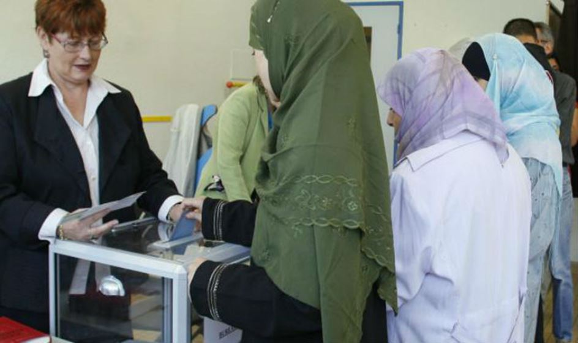

On est tous plus ou moins métissés, on a tous des copains de toute origine. Le problème n’est pas dans les gens. Il est dans les minorités, il est dans la politique, il est dans ce plus vieux métier du monde.
Combien ton vote ? Car la minorité est une notion créée par la politique.
92 % des noirs ont voté Clinton ; 92% des musulmans ont voté pour Hollande en 2012 au deuxième tour. C’est même grâce à eux qu’il est passé. 75 % des minorités (les Juifs, les latinos, les asiatiques) votent démocrate en Amérique, combien en France votent à gauche ?
Question : pourquoi ces minorités victimes du racisme, de la misère sociale, votent comme les barons de Wall Street, les stars hollywoodiennes ou le Qatar ? Oui, pourquoi les minorités jouent le jeu du Soros (le cercueil, en grec ancien) et des multimilliardaires ?
Ici, il faut comprendre que ce n’est pas la Gauche contre la Droite (les musulmans, de gauche ?), ni le « choc des civilisations », mais le système contre toute société. Et les oligarques fonctionnent comme les bolcheviques.

Bureau de vote à Roubaix (France)
Emmanuel Todd a récemment évoqué à propos des élections US un mercenariat électoral pour les démocrates. Il aurait pu ajouter que la même attitude prévaut en France. Todd hurle après les cathos zombie qui font de sales coups aux musulmans, il oublie de rajouter que ces musulmans votent comme un seul homme pour le PS qui tue ou déplace un million de musulmans en Syrie et ailleurs. Le PS se maintient et retournera aux affaires en 2022 en faisant voter ses minorités, doit-il pour cela comme Obama/Hillary remplir la France de minorités et de réfugiés.
Le mercenariat électoral veut dire ce qu’il veut dire : on achète les votes avec de prodigieux déficits, on entretient une culture juridique paranoïaque (tout le monde vous hait, tout le monde veut vous gazer), aussi bien en France qu’en Amérique, et on rentabilise cette clientèle le jour des élections - en sachant que le petit blanc complexé hésitera toujours : le Fillon-Trump est décrété nazi, facho, catho (c’est pire selon Joffrin), homophobe, nazi, antisémite, antisocial, macho, nazi, donc comment osez-vous ? Plus très sûr de lui, le petit blanc hésite, surtout le jeune qui a été bien efféminé (lisez La Boétie) et essoré par son éducation internationale (et non plus nationale), et cela donne les votes roses en attendant les révolutions orange. La femme blanche est accusé chez Trump d’avoir voté républicain, elle n’a pas voté la femme blanche pour le parti de la minorité féminine victime du féminicide de nos chers médiatiques. Et Hillary n’a pu atomiser la terre du machisme russe à cause d’Elle.
Mais vous vous rendez compte où on va terminer ?
Le clientélisme en action…
Comment en est-on arrivé-là ?
L’explication est simple : il y a le système moderne ou postmoderne, la machine de Cochin ou d’Ostrogorski (génial envoyé russe qui décrivit le désastre en Amérique) qui veut du vote, du quantitatif, et qui veut fonctionner. Il y a de l’autre la société plus ou moins traditionnelle, plus ou moins conservatrice, et qui doit être diabolisée et remplacée. Ostrogorski explique comment on détraque une grande ville américaine avec le fraîchement arrivé allemand, ou l’irlandais. L’immigré manipulé servait à s’emparer d’une ville.
Cochin écrit dans sa magistrale étude sur les sociétés de pensée :
« L'individualisme sape la famille comme les autres édifices sociaux. La cité de rêve ne sera faite que d'atomes humains directement agglomérés.
Cet individualisme est l'œuvre propre de la Révolution, de l'esprit jacobin, car le reste se serait fait comme ailleurs sans eux. D'eux, cette rage d'« affranchir » que nous voyons sévir aujourd'hui, et d'affranchir les gens contre leur volonté ; cette rage aussi d'égalitarisme ennemi de toute élite et cette fièvre de nivellement rêvant pour tous le même programme d'instruction, d'éducation et de fonction, tous étant décrétés également capables. »
Cochin d’enfoncer le clou :
« C'est l'individualisme révolutionnaire qui est, on le voit, la première condition du bon fonctionnement des rouages de la machine. Destruction de tout organisme politique, corps d'Etat et corps professionnels, destruction de toute foi, de toute idée commune, de tout esprit de corps et surtout de l'idéal religieux ».
Comme dit Houellebecq, l’individu doit être nu devant le marché. Idem pour le corps électoral. Pour recréer l’homme nu, le citoyen dont rêve un délirant comme le V.Peillon dans son opus sur la Révolution, il faut mettre à bas le corps social. C’est le système : tu seras robot, consommateur, citoyen programmé, électeur du Valls ou démocrate. Et la minorité doit servir à détruire la société d’avant. O détruira cette société en affolant par les tsunamis ou les attentats, comme l’écrit Naomi Klein.
La minorité c’est ce qui doit être affranchi ; comme ces marchés qui doivent être dérèglementés. La minorité dépendante des assistantes sociales c’est l’atome idéal, comme la mère célibataire qui vote anti-macho. Le marché n’agit pas autrement. Ils sont deux alliés objectifs, comme on disait dans ma jeunesse ; ils iront jusqu’au bout de leur valse, comme le Joker et sa dernière conquête.
Les traîtres ou les amis sont partout. Surtout pas de racisme ou de délire identitaire. Tout le monde est divisé. Nous sommes dans la « mystérieuse partie d’échecs » (Omar Khayyâm, CIII) du prisonnier : les pièces n’ont pas de couleur, on les reconnaît à leur mouvement.
Le reste est comme toujours du Céline :
« Nous périrons tous en chœur, avec plaisir en somme, dans un monde que nous aurons mis cinquante siècles à barbeler de contraintes et d’angoisses. »
Car là est le problème : on transforme de l’humanité en minorité pour nous manipuler et pour nous détruire.
N.B.
Bibliographie
Bonnal – Lettre ouverte à la vieille race blanche
Cochin – La libre-pensée et la révolution
Klein – La thérapie de choc
Ostrogorski – Democracy and the organization of political parties
Partager cette page